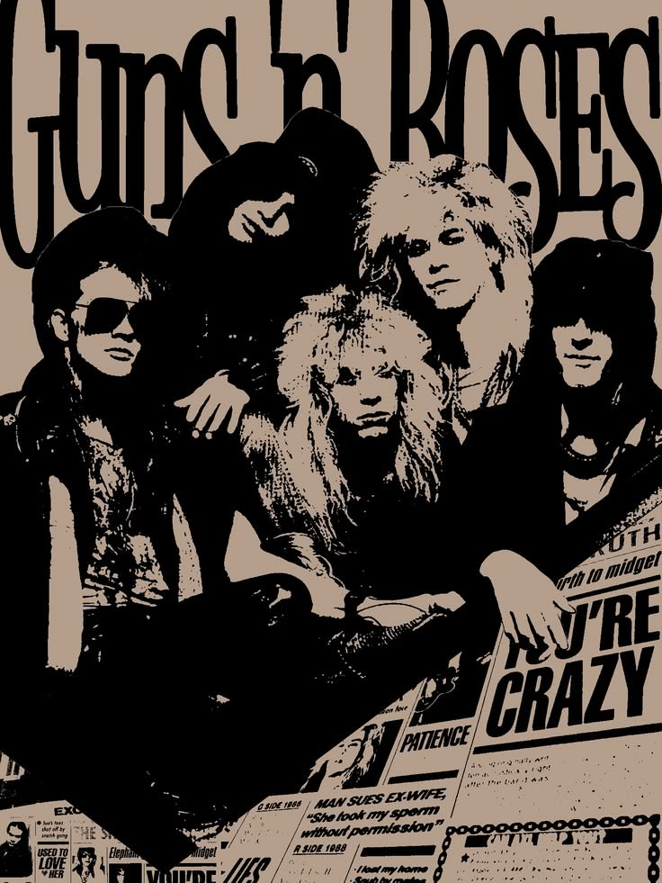
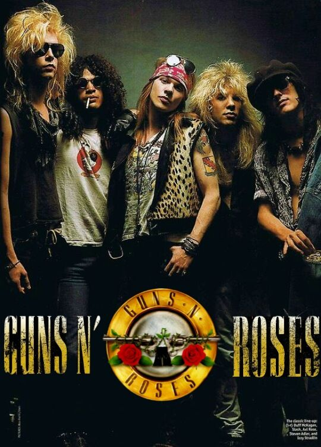
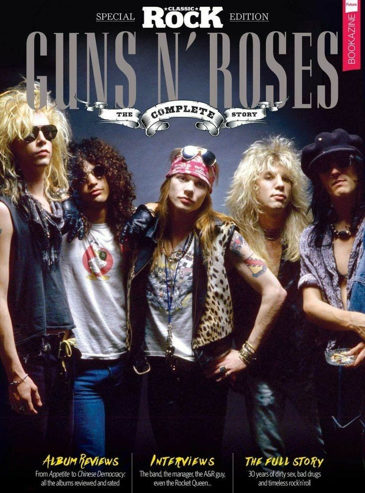
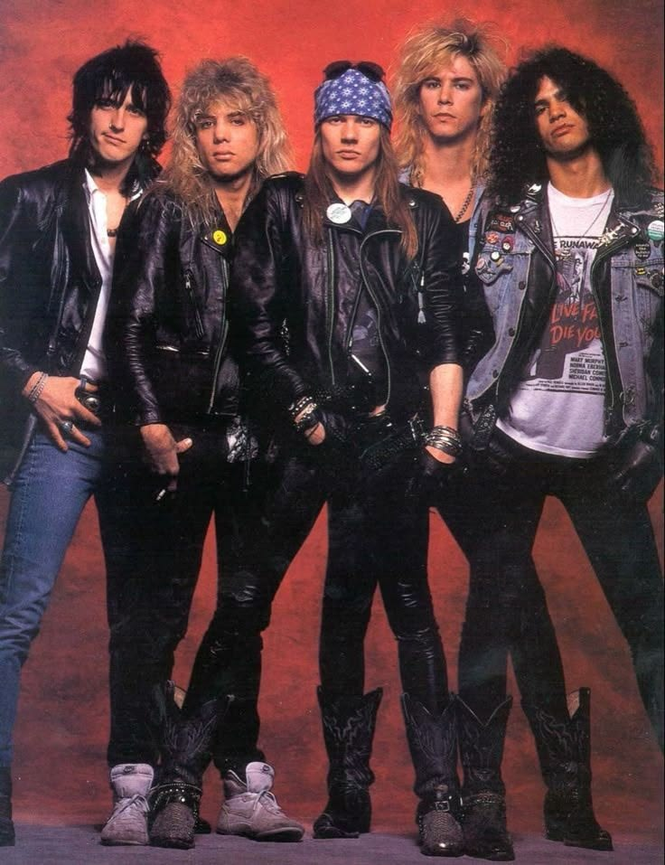

.jpg)
Nombre de la banda: Guns N' Roses
País de origen: Estados Unidos
Género musical: Hard rock
Inicio de su carrera: 1985
Guns N' Roses es una emblemática banda estadounidense de hard rock formada en Los Ángeles, California, en 1985. Liderada por el icónico vocalista Axl Rose y el legendario guitarrista Slash, la agrupación ha marcado la historia del rock mundial con himnos inolvidables, llenando estadios alrededor del planeta con su energía inigualable.




(Oh my God) (Ooh-ooh) (Cha)
Welcome to the jungle We got fun and games We got everything you want Honey, we know the names
We are the people that can find Whatever you may need If you got the money, honey We got your disease
In the jungle, welcome to the jungle Watch it bring you to your knees, knees Oh, I wanna watch you bleed
Welcome to the jungle We take it day by day If you want it, you're gonna bleed But it's the price you pay
And you're a very sexy girl That's very hard to please You can taste the bright lights But you won't get there for free
In the jungle, welcome to the jungle Feel my, my, my, my serpentine I, I wanna hear you scream
Welcome to the jungle It gets worse here everyday You learn to live like an animal In the jungle, where we play
If you got a hunger for what you see You'll take it eventually You can have anything you want But you better not take it from me
In the jungle, welcome to the jungle Watch it bring you to your knees, knees Oh, I wanna watch you bleed
And when you're high, you never Ever want to come down So down, so down, so down, yeah
You know where you are? You're in the jungle, baby You're gonna die
In the jungle, welcome to the jungle Watch it bring you to your knees, knees In the jungle, welcome to the jungle Feel my, my, my serpentine
In the jungle, welcome to the jungle Watch it bring you to your knees, knees Down in the jungle, welcome to the jungle Watch it bring you to you It's gonna bring you down
When I look into your eyes I can see a love restrained But, darlin', when I hold you Don't you know I feel the same?
'Cause nothin' lasts forever And we both know hearts can change And it's hard to hold a candle In the cold November rain
We've been through this such a long, long time Just tryin' to kill the pain, oh, yeah
But lovers always come and lovers always go And no one's really sure who's lettin' go today Walking away
If we could take the time To lay it on the line I could rest my head Just knowin' that you were mine All mine
So, if you want to love me Then, darlin', don't refrain Or I'll just end up walkin' In the cold November rain
Do you need some time on your own? Do you need some time all alone? Oh, everybody needs some time on their own Oh, don't you know you need some time all alone?
I know it's hard to keep an open heart When even friends seem out to harm you But if you could heal a broken heart Wouldn't time be out to charm you?
Sometimes I need some time on my own Sometimes I need some time all alone Oh, everybody needs some time on their own Oh, don't you know you need some time all alone?
And when your fears subside And shadows still remain Oh, yeah
I know that you can love me When there's no one left to blame So nevermind the darkness We still can find a way 'Cause nothin' lasts forever Even cold November rain
Don't ya think that you need somebody? Don't ya think that you need someone? Everybody needs somebody You're not the only one You're not the only one
Don't ya think that you need somebody? Don't ya think that you need someone? Everybody needs somebody You're not the only one You're not the only one
Don't ya think that you need somebody? Don't ya think that you need someone? Everybody needs somebody You're not the only one You're not the only one
Don't ya think that you need somebody? Don't ya think that you need someone? Everybody needs somebody You're not the only one
Take me down to the Paradise City Where the grass is green and the girls are pretty (Take me home) oh, won't you, please, take me home? Take me down to the Paradise City Where the grass is green and the girls are pretty (Take me home) oh, won't you, please, take me home?
Just an urchin living under the street I'm a hard case that's tough to beat I'm your charity case, so buy me something to eat I'll pay you at another time Take it to the end of the line
Rags to riches, or so they say You gotta keep pushing for the fortune and fame You know it's, it's all a gamble when it's just a game You treat it like a capital crime Everybody's doing their time
Take me down to the Paradise City Where the grass is green and the girls are pretty Oh, won't you, please, take me home, yeah, yeah? Take me down to the Paradise City Where the grass is green and the girls are pretty Take me home
Strapped in the chair of the city's gas chamber Why I'm here, I can't quite remember The surgeon general says it's hazardous to breathe I'd have another cigarette, but I can't see Tell me who you're gonna believe
Take me down to the Paradise City Where the grass is green and the girls are pretty Take me home, yeah, yeah Take me down to the Paradise City Where the grass is green and the girls are pretty Oh, won't you, please, take me home, yeah?
So far away, so far away So far away, so far away
Captain America's been torn apart Now he's a court jester with a broken heart He said: Turn me around and take me back to the start I must be losing my mind, are you blind? I've seen it all a million times
Take me down to the Paradise City Where the grass is green and the girls are pretty Take me home, yeah, yeah Take me down to the Paradise City Where the grass is green and the girls are pretty Oh, won't you, please, take me home?
Take me down to the Paradise City Where the grass is green and the girls are pretty Take me home, yeah, yeah Take me down to the Paradise City Where the grass is green and the girls are pretty Oh, won't you, please, take me home, home?
Oh, I wanna go, I wanna know Oh, won't you, please, take me home? I wanna see how good it can be Oh, won't you, please, take me home?
Take me down to the Paradise City Where the grass is green and the girls are pretty (Take me home) oh, won't you please take me home? Take me down to the Paradise City Where the grass is green and the girls are pretty Oh, won't you, please, take me home?
Take me down (oh, yeah), spin me 'round Oh, won't you, please, take me home? I wanna see how good it can be Oh, won't you, please, take me home?
I wanna see how good it can be Oh, oh, take me home
Take me down to the Paradise City Where the grass is green and the girls are pretty Oh, won't you, please, take me home? I wanna go, I wanna know Oh, won't you, please, take me home? Yeah, baby
Fragmentos de muestra incluidos para este proyecto educativo sobre Guns N' Roses.